1. git bash 常用命令
众所周知,现实世界和计算机世界是不同的,但是计算机作为人类对现实世界的抽象模拟,在一定程度上,具备了现实世界的基本特征,本文将以哲学角度对比分析现实世界和计算机世界,试图以浅显易懂的方式感受现实世界和计算机世界的联系.
首先请先回顾一下哲学的基本问题问题: 我是谁,我在哪以及我要干什么?
接下来我们逐步探讨下两个世界的关联,顺便学习下 Git Bash 支持的常用命令以及 git 的基本操作.
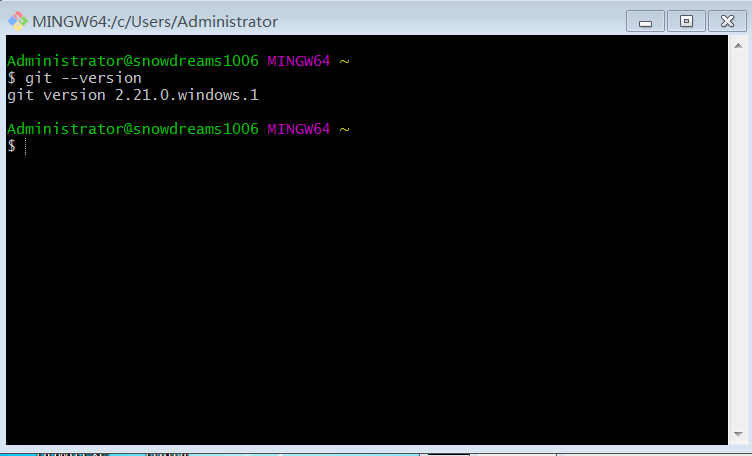
如果还没有安装
git环境,请参考进行 https://snowdreams1006.github.io/git/base/install.html 或者参考千呼万唤始出来章节进行安装.
1.1. 哲学第一问: 我是谁
现实生活中我们每个人都有名字,身份以及责任.正是由自我和他人一起构成了"我是谁"这一基本问题: 是儿子,是丈夫,是父亲,是社会中的一份子.
但是,在计算机世界中,我又是谁呢?
计算机世界是虚拟世界,有的只是冰冷冷的程序和数据,有限的人机交互才创造了"我",所以弄清楚"我是谁"的问题至关重要.
whoami:who am i的缩写,即打印出当前登录用户.
计算机世界中,"我"表现为一个账号,用户名是唯一标识.在这个世界上不止一个用户，同一台电脑支持多个账号.
所以,"我"是计算机的用户,哪天警察检查身份证时,需要自报家门,如果你都不知道你的名字那岂不是闹笑话了？
snowdreams1006@home MINGW64 ~
$ whoami
snowdreams1006
1.2. 哲学第二问: 我在哪
不论是武侠小说主角突然失忆还是被绑架桥段,第一句总是： "我是谁？这是哪？"或者"你是谁？这是哪？".
不仅现实世界人很多,计算机世界的用户也不止一个,目录更是数不胜数. 所以，我们第二个问题就要探讨一下"我在哪"的基本问题.
echo ~:echo翻译为"回声",直接表现为输出某命令的执行结果,~代表用户的"家"目录,即输出家目录.
现实世界中我们每个人都有自己的家,计算机世界也不例外.每个用户都有自己的家目录
试想一下,如果没有心灵的港湾,灵魂和身体该如何安放?如果没有家目录,数据默认存放到哪里去？多个用户之间的数据怎么保证相对隔离？
snowdreams1006@home MINGW64 ~
$ echo ~
/c/Users/snowdreams1006
1.3. 哲学第三问: 我要干什么
现实世界中,每个人出生后会慢慢长大,或一直留在家乡或外出闯荡,终其一生，生不带来，死不带去.
其中最直观表现为每个人基本上都要工作,从而维持生活,继而创造社会价值.不论是当地就业还是外出就业,我们上班的地点被称为工作地点.
家只有一个,工作地点却可以有多个,可以换工作换工作地点,但是永远只有一个家,是故乡,是出生地,是心灵的港湾.
如果这种场景反映到计算机世界,又是怎样一番场景呢?
既然和计算机打交道,不论什么交互方式,最终都无外乎输入输出两种形式.输入的是我们的投入,输出的是我们的产出.
输入输出的数据需要存储在计算机中,是以文件的形式有组织地保存起来,保存数据的目录就是工作目录,不是自己的家目录的其他目录都是我们的工作目录.
这样看起来,原来在计算机中换工作竟然这么容易,不是家目录的其他目录都是工作目录.
1.3.1. 万丈高楼平地起: 创建目录
mkdir [OPTION] DIRECTORY:make directory的缩写,即创建目录.
万丈高楼平地起,计算机人生刚刚起步,需要搭建好大厦的基础框架,然后再往里面一点一点加东西,终将变成摩天大厦！
立下明确目标,坚定不移前往目的地,工作目录已创建,第一步已经迈出去,接下来准备前往新创建的工作目录,搭建好我们自己的高楼大厦.
snowdreams1006@home MINGW64 ~
$ mkdir /g/workpace/git-bash-demo
1.3.2. 飘洋过海来看你: 切换目录
cd [-L|[-P [-e]] [-@]] [dir]:change directory的缩写,即切换目录.
既然选择了前方,便只顾风雨兼程.心中的大厦蓝图等待去实现,不论是从家目录出发还是工作目录出发,既然目标工作目录已经确定,接下来如何出发便不是太麻烦的事情了.
现实世界中出发到工作地点,可以坐高铁,坐轮船,坐飞机等多种交通方式任你挑选,在计算机世界中前往工作目录就很简单,只要明确知道工作目录,一条命令瞬间直达！
snowdreams1006@home MINGW64 ~
$ cd /g/workpace/git-bash-demo
1.3.3. 惊鸿一瞥初相见: 打印目录
pwd [-LPW]:print working directory的缩写,即打印工作目录.
初次来到新的工作地点,第一件事就是查看当前位置以便确认漂洋过海的经历没有白费。
非家目录的其他目录都是工作目录,确认工作目录是目标目录后就可以正式投入紧张有序的工作生活中了,准备好了吗？
snowdreams1006@home MINGW64 /g/workpace/git-bash-demo
$ pwd
/g/workpace/git-bash-demo
1.3.4. 回头四顾心茫然: 列出文件
ls [OPTION] [FILE]:list file的缩写,即列出文件.
刚刚进入新环境,本想查看一下周围环境和同事打个招呼,蓦然发现: 周围空无一人.
空荡荡的房子提醒着自己,万丈高楼平地起,创业道路孤独而艰辛！
snowdreams1006@home MINGW64 /g/workpace/git-bash-demo
$ ls
1.3.5. 保温杯中泡枸杞: 创建文件
touch [OPTION] [FILE]: 翻译为"触摸",有则改之无则新增,即如果文件已存在则更新权限和修改时间,否则新建文件.
身体是革命的本钱,即将开始废寝忘食的创业之旅,在高强度的工作来临之前,先检查一下保温杯在不在,在的话,洗一洗,不在的话,先去买一个再洗一洗.
snowdreams1006@home MINGW64 /g/workpace/git-bash-demo
$ touch cup.txt
1.3.6. 枸杞茶中加枸杞: 覆盖输入
>: 覆盖输入,不论目标文件是否已有内容,新内容直接覆盖原文件内容.
保温杯中泡枸杞,第一步先往保温杯中加入枸杞,如果有其他东西先倾倒然后再加入枸杞,否则直接加入枸杞.
snowdreams1006@home MINGW64 /g/workpace/git-bash-demo
$ echo "medlar" > cup.txt
echo"medlar" 即输出枸杞,>是重定向操作,将上一步的输出结果当做下一步的输入参数,cup.txt是保温杯,因此该组合命令表示将枸杞倒入保温杯.
1.3.7. 枸杞茶中倒热水: 追加输入
>>: 追加输入,在原有文件内容后面追加新内容,新内容不会覆盖原文件内容.
保温杯中已有枸杞,第二步开始倒水准备泡枸杞茶,枸杞自然不能倾倒出去,不然就叫做白开水不能叫做枸杞茶了.
snowdreams1006@home MINGW64 /g/workpace/git-bash-demo
$ echo "water" >> cup.txt
1.3.8. 枸杞茶要慢慢品: 查看文件
cat [OPTION] [FILE]:concatenate的缩写,翻译为"连接",即查看文件内容.
枸杞只需一点点,温水适量,不多也不少才是最好,最好亲自品尝一下才能决定如何继续调整.
要看到文件的全部内容正如要看到枸杞茶整体一样,后续操作视观察结果而定.
snowdreams1006@home MINGW64 /g/workpace/git-bash-demo
$ cat cup.txt
medlar
water
1.3.9. 枸杞茶要再调整： 追加并查看文件
枸杞差不多,浓度有点大,需要再加一点水,为了控制加入量,还要再品一下枸杞茶.
# 追加文件内容
snowdreams1006@home MINGW64 /g/workpace/git-bash-demo
$ echo "more water" >> cup.txt
snowdreams1006@home MINGW64 /g/workpace/git-bash-demo
# 查看文件内容
$ cat cup.txt
medlar
water
more water
1.3.10. 三更灯火五更鸡: 编辑文件
vim [OPTION] [FILE]:Vi IMproved的缩写,vi = VIsual = Very Inconvenient是命令行编辑工具,vim即vi的增强版,编辑文件.
先设定整体目标,做好全局性计划,然后再是根据目标确定详细具体的工作安排.
# 在命令行编辑器中编辑 goal.txt 文件,如果没有会自动创建.
$ vim goal.txt
进入编辑器后的基本命令
i:insert的缩写,翻译为"插入",即切换到编辑模式.esc:escape的缩写，翻译为"逃跑",即切换到命令模式.:w：write的缩写,翻译为"保存",即保存文件内容.:q:quit的缩写，翻译为"退出",即退出vim编辑器.:wq:write and quit的缩写，翻译为"保存并退出",即保存并退出vim编辑器.:q!:quit force的缩写,翻译为"强制退出",即不提示未保存强制退出.gg: 定位到文件开头.G： 定位到文件结尾.yy: 复制整行.dd: 剪切整行.p: 粘贴.u: 撤销.ctrl + f: 下翻整页.ctrl + b: 上翻整页.ctrl + d: 下翻半页.ctrl + u: 上翻半页./<string>: 查找字符串
编辑后的目标,学习 markdown ,学习 git ,学习 gitbook ,分享 java 知识等等,目标远大,撸起袖子加油干吧！
snowdreams1006@home MINGW64 /g/workpace/git-bash-demo
$ cat goal.txt
## learning markdown
## learning git
## learning gitbook
## sharing java8
1.3.11. 撸起袖子加油干: 查看开头
head [OPTION] [FILE]:head翻译为"头",即打印文件前十行内容.
我们立下的目标暂时只有四行,为了掩饰效果,临时录入更多无意义的计划,这部分并不属于我们的目标.
echo "万丈高楼平地起: 创建目录" >> goal.txt
echo "飘洋过海来看你: 切换目录" >> goal.txt
echo "惊鸿一瞥初相见: 打印目录" >> goal.txt
echo "回头四顾心茫然: 列出文件" >> goal.txt
echo "保温杯中泡枸杞: 创建文件" >> goal.txt
echo "枸杞茶中加枸杞: 覆盖输入" >> goal.txt
echo "枸杞茶中倒热水: 追加输入" >> goal.txt
echo "枸杞茶要慢慢品: 查看文件" >> goal.txt
现在 goal.txt 文件不止十行,而是十六行数据,足够我们演示效果.
在泡枸杞茶最后一步中,我们需要品茶以此确定枸杞和热水搭配是否合理,使用 cat 命令帮我们查看文件全部内容,如果我们不需要查看全部,只需要查看前十条的话,就需要另外的命令.
snowdreams1006@home MINGW64 /g/workpace/git-bash-demo
$ cat goal.txt
## learning markdown
## learning git
## learning gitbook
## sharing java8
万丈高楼平地起: 创建目录
飘洋过海来看你: 切换目录
惊鸿一瞥初相见: 打印目录
回头四顾心茫然: 列出文件
保温杯中泡枸杞: 创建文件
枸杞茶中加枸杞: 覆盖输入
枸杞茶中倒热水: 追加输入
枸杞茶要慢慢品: 查看文件
查看目标清单中的前十条记录,而不显示全部记录.
snowdreams1006@home MINGW64 /g/workpace/git-bash-demo
$ head goal.txt
## learning markdown
## learning git
## learning gitbook
## sharing java8
万丈高楼平地起: 创建目录
飘洋过海来看你: 切换目录
1.3.12. 不思进取后十名: 查看结尾
tail [OPTION] [FILE]:tail翻译为"尾",即打印文件后十行内容.
如果查看文件是目标文件 goal.txt 还好,目标再小也不应被歧视,如果是成绩文件或者绩效文件,难免会被比较,打上"不思进取"的标签.
snowdreams1006@home MINGW64 /g/workpace/git-bash-demo
$ tail goal.txt
## sharing java8
万丈高楼平地起: 创建目录
飘洋过海来看你: 切换目录
惊鸿一瞥初相见: 打印目录
回头四顾心茫然: 列出文件
保温杯中泡枸杞: 创建文件
枸杞茶中加枸杞: 覆盖输入
枸杞茶中倒热水: 追加输入
枸杞茶要慢慢品: 查看文件
1.3.13. 优雅的写作体验: markdown
markdown是一种轻量型的文本标记语言,是无文本txt的增强版，是超文本html的精简版,是二进制word的替代版,带给你全新的写作体验.
刚刚立下的目标文件的第一条就是学习 markdown ,那什么是 mardown 以及我们为什么要学习 markdown 呢？
snowdreams1006@home MINGW64 /g/workpace/git-bash-demo
# 前一条记录: -n 1，前五条记录: -n 5
$ head -n 1 goal.txt
## learning markdown
如果你的文章需要手动同步发表到各大网络平台,用书写 word 那种体验虽然直观,但是缺点是需要记住各平台布局按钮摆放位置,想要达到一致的输出效果,每个平台都需要手动调整以确保最终效果一致性.
如果使用 markdown 体验来书写文字则完全不会有这种问题,提前定义好的文件格式并不依赖平台,你可以一处编写,随心所欲到处复制粘贴!
既然 markdown 这么神奇,这种优雅的写作方式到底是什么呢?学起来真的一点都不费事!
markdown 是一种标记语言,常用于书写文章,小巧轻量,不必记住令人眼花缭乱的按钮摆放位置,也不像记事本那种毫无格式,只需记住有限几个特殊字符就能输出漂亮美观的文件效果！
比如当前文章的书写格式就是 markdown 进行编写,整体效果还不错,这样看起来 markdown 是不是很强大呢?
和其他文本文档一样,
markdown文件也有自己的后缀名.md,比如该文章的文件名git-bash-command.md.
现在你是不是迫不及待想要学习 markdown 了呢?
别急,学习需要规划,我们再专门新建目录用于存放 markdown 学习笔记.
snowdreams1006@home MINGW64 /g/workpace/git-bash-demo
# 创建目录: 参考"万丈高楼平地起"章节
$ mkdir markdown
snowdreams1006@home MINGW64 /g/workpace/git-bash-demo
# 列出文件: 参考"回头四顾心茫然"章节
$ ls
cup.txt goal.txt markdown/
snowdreams1006@home MINGW64 /g/workpace/git-bash-demo
# 切换目录: 参考"飘洋过海来看你"章节
$ cd markdown
snowdreams1006@home MINGW64 /g/workpace/git-bash-demo/markdown
# 打印目录: 参考"惊鸿一瞥初相见"章节
$ pwd
/g/workpace/git-bash-demo/markdown
现在让我们先学习下 markdown 中标题和列表如何书写,想要了解更多请参考我专门介绍 makdown 的系列文章.
- 标题
语法格式:
#+空格+文本,#表示一级标题,##表示二级标题,###表示三级标题,以此类推,最多支持六级标题.
示例:
# 标题1
## 标题2
- 有序列表
语法格式：
数字+.+空格+文本
示例:
1. 有序列表1
2. 有序列表2
3. 有序列表3
- 无序列表
语法格式：'
- 或 * 或 +' +空格+文本
示例:
- 无序列表1
* 无序列表2
+ 无序列表3
哇塞,原来 markdown 语言竟然如何简洁,妈妈再也不用担心我记不住复杂的布局按钮了！
笔记时间到,赶紧将上述知识点整理到 markdown 目录下,创建 markdown.md 文件用于记录刚才的学习笔记.
snowdreams1006@home MINGW64 /g/workpace/git-bash-demo/markdown
# 编辑文件: 参考"三更灯火五更鸡"章节
$ vim markdown.md
snowdreams1006@home MINGW64 /g/workpace/git-bash-demo/markdown
# 查看文件: 参考"枸杞茶要慢慢品"章节
$ cat markdown.md
先学习下 `markdown` 中标题和列表如何书写,想要了解更多请参考我专门介绍 `makdown` 的[系列文章](https://snowdreams1006.github.io/markdown/).
...
1.3.14. 恪尽职责的网盘: git
经过上述内容引导发现 markdown 语法确实在某些场景下很好用,于是乎下定决心开始踏上学习 markdown 之旅.
工欲善其事必先利其器,本着小白初体验心态,还是先安装一个可视化的编辑器吧!
实际上,
markdown很常用,主流编辑器基本都有相应插件,比如idea,vs code和sublime等.
typora 编辑器,支持多平台, windows ,mac 和 linux,别具一格的首页.
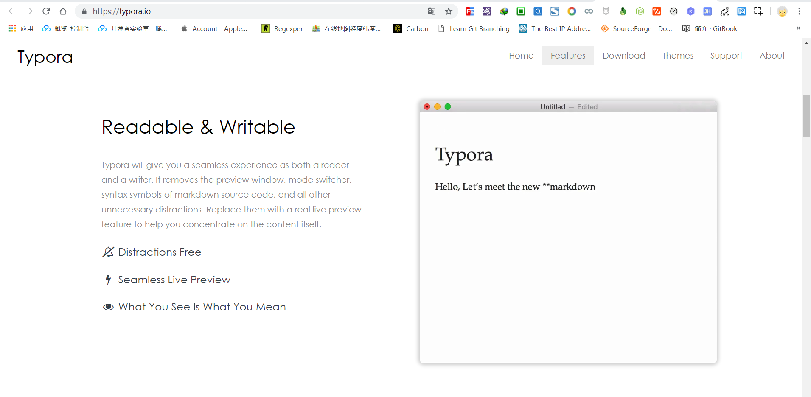
安装没有特殊的注意事项,正常安装就可以了,安装完毕后可以选择打开已有 markdown 文件.
实时渲染,所见即所得,左侧是文件列表,右侧是内容编辑器,喜欢的话赶紧入手吧!
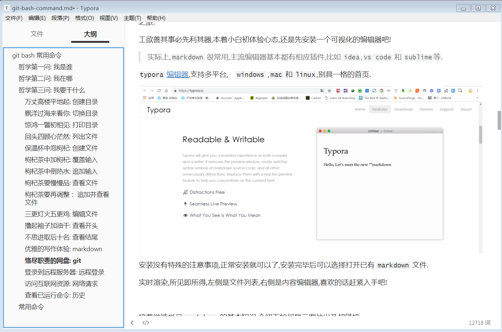
装备好编辑器后,我们接着继续学习 markdown 的基本知识,介绍下如何显示图片以及超链接。
- 链接
语法格式：
[显示文本]+(链接地址)
示例:
[https://snowdreams1006.github.io](https://snowdreams1006.github.io/)
- 图片
语法格式：
!+[图片标题]+(图片地址)
示例:

点滴积累也是进步,记得要把这次的学习笔记保存到我们之前的 markdown.md 文件中哟！
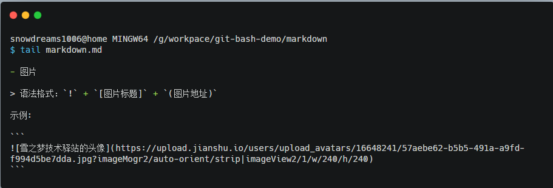
正所谓"温故而知新可以为师矣",笔记不仅要写还要经常看,于是在刚刚的笔记上做些修改添加自己的理解.
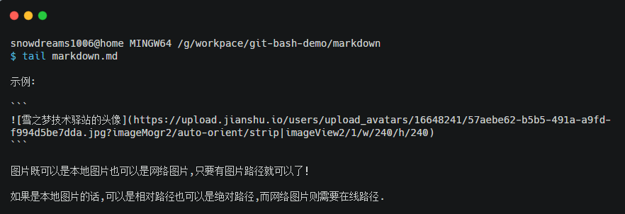
果然是一次愉快的学习体验,真的是活学活用啊,孺子可教也！
隔壁小伙伴听说你最近在学 markdown ，想借你老师留下的笔记看看,于是你好心找一下课堂笔记打算发给他.
等一等,对方需要的是课件资料并不包含你自己理解那部分笔记哟,怎么办?
那就以当前笔记为基础再复制一份笔记,然后删掉自己理解的那部分笔记呗！
- 请给我拷贝课件: 复制文件
cp [OPTION] [-T] SOURCE DEST:copy的缩写,即复制文件.
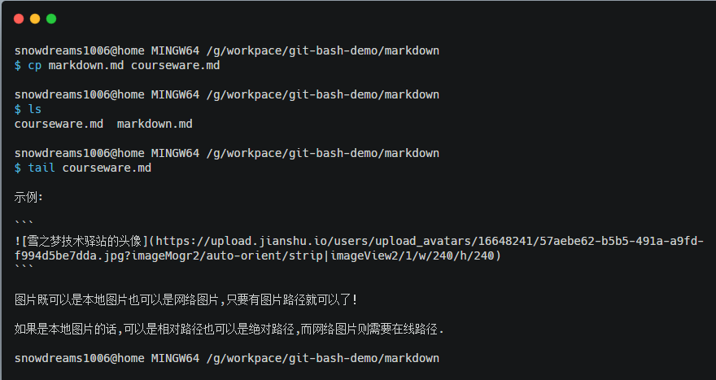
既然对方明确要求课件而不是自己的笔记,那把自己的那部分内容手动清除掉呗!
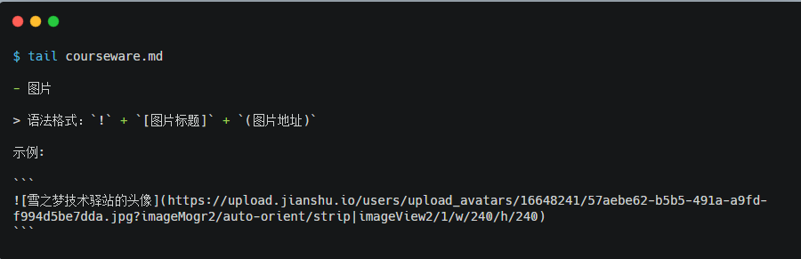
整理好课件后发给了小伙伴,虽然辛苦点但是帮助别人快乐自己,谁让我们一直接受的教育就是助人为乐呢？
经过一阵子的学习了解到更多 markdown 知识,于是课件加上自己的笔记越来越多,小白已经渐渐远去,大神正在向我们招手...
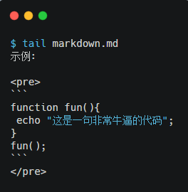
- 省心尽责的网盘: 版本控制系统
上次帮助了隔壁的小伙伴,一传十十传百,又有其他小伙伴求课件了,听说认真好学的你还做了笔记,也有人要笔记,事情有点复杂啊.
有的人需要课件,有的人需要笔记,已领取资料的人还想要后续更新能及时通知到他们?
如果仍然采用复制粘贴修改的方式,可想而知是多么麻烦,源文件复制一份给张三,再复制一份给李四并且还要去掉自己笔记部分,给王二的文件比较老还有再弄一份新的给他...
如果不考虑文件的差异性需求,可以将文件上传到网盘中再分享给需要的小伙伴,明显这种网盘并不能解决目前问题.
因为网盘的文件是源文件的最新备份,不能满足文件差异性的需求也无法管理文件历史状态.
万一哪次整理课件时需要删除笔记部分时,一不小心忘记备份源文件,课堂笔记就这么丢失了很难再找回来了!
所以,如果有这么一种工具能够事无巨细帮我们记录文件状态,还能有网盘管理并分享的功能就能解决我们的痛点了,这样恪尽职责的网盘谁能不喜欢?
事实上,这种工具确实存在而且不仅一种！
专业术语叫做版本控制系统,其中分为集中式版本控制系统和分布式控制系统,区别在于鸡蛋是否在一个篮子中.
如果鸡蛋都在一个篮子中,母鸡无论在何处下蛋,鸡蛋最终都会被收集都一个篮子中,想要吃鸡蛋时再去这个篮子里拿,这就叫做集中式版本控制系统.
如果鸡蛋不在同一个篮子中,母鸡下的鸡蛋被收集到附近的篮子中,需要吃鸡蛋时再从最近的篮子中去拿,这种情况就叫做分布式版本控制系统.
集中式的特点在于集中管理统一调度,而分布式的特点在于分开管理灵活高效,实际情况中选择哪一个需要具体情况具体分析.
当然,我们现在讲解的只是其中之一,那就是分布式版本控制系统.
- 千呼万唤始出来:
git
说到分布式版本控制系统,不得不提的就是 git --- 最先进最流行的分布式版本控制系统.
git 是分布式版本控制系统家族的璀璨明星,免费开源,支持 windows ,mac 以及 linux 等平台.
下面以 windows 电脑为例,介绍下 git 的安装和使用.
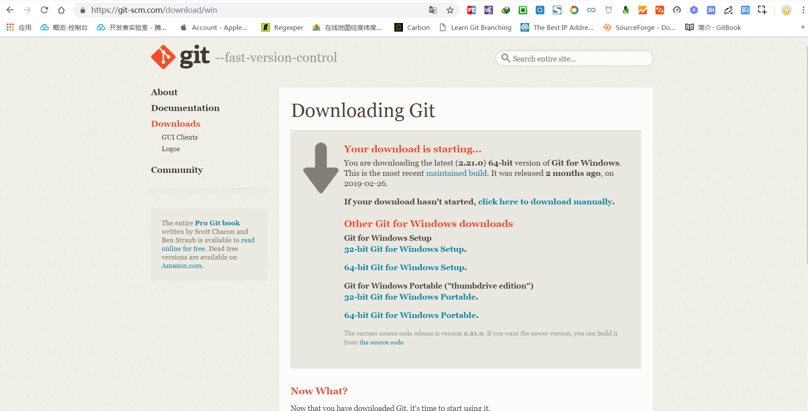
官网下载地址: https://git-scm.com/download/win
正常的话,按照默认选择安装即可,请确保 Git Bash Here 前面的复选框已勾选,否则无法提供命令行终端.
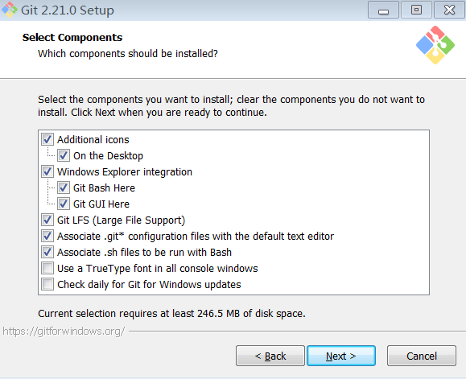
接下来一切按照默认选项安装,安装模拟终端类型时请选择第一种 Mintty 以保证环境一致性.
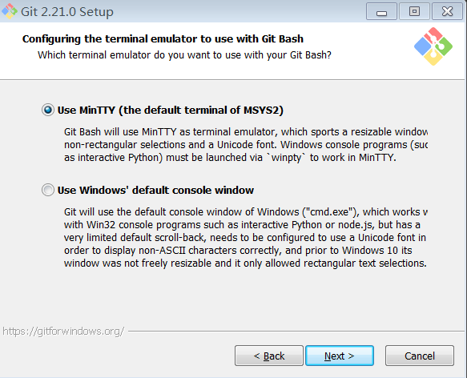
安装成功后桌面或者右键会出现 Git Bash 图标或选项,打开终端,输入 git --version如果能正常输出版本信息,那就说明安装成功了!
现在我们又不经意间学习了 git ,这不刚好是我们的第二个目标?
纳尼,你说目标是啥?竟然忘记了最初的目标.
snowdreams1006@home MINGW64 /g/workpace/git-bash-demo/markdown
$ ls
courseware.md markdown.md
snowdreams1006@home MINGW64 /g/workpace/git-bash-demo/markdown
$ cd ../
snowdreams1006@home MINGW64 /g/workpace/git-bash-demo
$ ls
cup.txt goal.txt markdown/
snowdreams1006@home MINGW64 /g/workpace/git-bash-demo
$ head goal.txt
## learning markdown
## learning git
## learning gitbook
## sharing java8
万丈高楼平地起: 创建目录
飘洋过海来看你: 切换目录
关于学习 markdown 的目标已经完成,学以致用不如动手改造下目标文件 goal.txt 重命名 goal.md .
- 改头换面化个妆: 移动文件
mv [OPTION] [-T] SOURCE DEST:move file的缩写,即移动文件.
正常来说换工作一般会工作地点,当然升职这种换工作但工作地点可能并没有改变,反映到计算机世界中,移动文件本是更改工作目录,如果工作目录没有改变,只是修改个后缀名也未尝不可.
$ ls
cup.txt goal.txt markdown/
snowdreams1006@home MINGW64 /g/workpace/git-bash-demo
$ mv goal.txt goal.md
snowdreams1006@home MINGW64 /g/workpace/git-bash-demo
$ ls
cup.txt goal.md markdown/
snowdreams1006@home MINGW64 /g/workpace/git-bash-demo
$ cat goal.md
## learning markdown
## learning git
## learning gitbook
## sharing java8
万丈高楼平地起: 创建目录
飘洋过海来看你: 切换目录
惊鸿一瞥初相见: 打印目录
回头四顾心茫然: 列出文件
保温杯中泡枸杞: 创建文件
枸杞茶中加枸杞: 覆盖输入
枸杞茶中倒热水: 追加输入
枸杞茶要慢慢品: 查看文件
- 版本控制我来了: 初始化
git init: 即初始化本地项目.
如何将文件放到网盘管理,正如如何将鸡蛋放到篮子中,首先要有篮子,这里我们将 git-bash-demo 父目录充当我们的篮子.
正式使用 git 打造本地网盘前,我们还需要设置下用户名和邮箱,这一步相当于自报家门,这样 git 才知道现在是谁在用.
还记得我是谁吗?
whoami就是你在计算机中的用户名,这里的git用户名可以使自定义的用户名.
$ git config --global user.name "your username"
$ git config --global user.email "example@example.com"
现在运行 git init 命令,开始打造本地网盘,开启版本控制之旅!
snowdreams1006@home MINGW64 /g/workpace/git-bash-demo
$ pwd
/g/workpace/git-bash-demo
snowdreams1006@home MINGW64 /g/workpace/git-bash-demo
$ git init
Initialized empty Git repository in G:/workpace/git-bash-demo/.git/
好记性不如烂笔头,像我们学习 markdown 那样,我们也创建专门的目录用于存放 git 笔记.
snowdreams1006@home MINGW64 /g/workpace/git-bash-demo (master)
$ ls
cup.txt goal.md markdown/
snowdreams1006@home MINGW64 /g/workpace/git-bash-demo (master)
$ mkdir git
snowdreams1006@home MINGW64 /g/workpace/git-bash-demo (master)
$ ls
cup.txt git/ goal.md markdown/
snowdreams1006@home MINGW64 /g/workpace/git-bash-demo (master)
$ cd git
snowdreams1006@home MINGW64 /g/workpace/git-bash-demo/git (master)
$ ls
snowdreams1006@home MINGW64 /g/workpace/git-bash-demo/git (master)
$ touch git.md
snowdreams1006@home MINGW64 /g/workpace/git-bash-demo/git (master)
$ ls
git.md
snowdreams1006@home MINGW64 /g/workpace/git-bash-demo/git (master)
$ echo "first step : git init" > git.md
snowdreams1006@home MINGW64 /g/workpace/git-bash-demo/git (master)
$ cat git.md
first step : git init
- 知己知彼看状态: 查看状态
git status: 即查看文件状态
正所谓"知己知彼方能百战不殆",随时了解文件状态才能做到心中有数,从而更好地进行版本管理.
所谓"版本",可以理解为现实世界中的不同时空那一刻的"状态",文件的版本则是记录了文件的历史状态.
git status 命令告诉我们文件状态以及能够智能猜预测我们下一步操作,好比身边的小秘书一样.
snowdreams1006@home MINGW64 /g/workpace/git-bash-demo/git (master)
$ git status
# 在 `master` 分支上,暂时不用理解分支概念,默认处于该分支
On branch master
# 目前还没有提交,`commit` 翻译"提交",即"版本",表示文件的不同历史时刻下的当时的状态
No commits yet
# 未被追踪的文件: 好比文件上传到网盘一样,`git init` 创建本地网盘,但还没添加文件到网盘中.
Untracked files:
# (使用 `git add <file>` 来包含将要被添加的文件: 智能预测提示我们下一步应该添加下述文件)
(use "git add <file>..." to include in what will be committed)
../.swp
../cup.txt
./
../goal.md
../markdown/
# 没有已添加文件需要提交,但是目前有未被追踪文件(使用 `git add` 去追踪文件变化): 再次提示我们运行 `git add` 命令追踪文件.
nothing added to commit but untracked files present (use "git add" to track)
- 整装待命入队列: 添加文件
git add <file>： 即添加文件,表示跟踪文件变化,即将加入版本控制系统.
如果将文件上传到网盘中,首先需要确定好需要上传的文件列表,然后才是上传文件的具体操作.
git add <file> 做的就是挑选出需要上传文件的清单列表,追踪到这些文件的变化以便下一步一次性全部上传!
$ git add ../cup.txt ./ ../goal.md ../markdown/
warning: LF will be replaced by CRLF in cup.txt.
The file will have its original line endings in your working directory
warning: LF will be replaced by CRLF in git/git.md.
The file will have its original line endings in your working directory
warning: LF will be replaced by CRLF in goal.md.
The file will have its original line endings in your working directory
warning: LF will be replaced by CRLF in markdown/courseware.md.
The file will have its original line endings in your working directory
warning: LF will be replaced by CRLF in markdown/markdown.md.
The file will have its original line endings in your working directory
在命令行操作中的基本哲学理念是"没有消息就是好消息",输入命令没有任何反馈的话,操作一般都成功了,如果操作失败都会有报错提示的.
虽然我们是在 windows 电脑上演示命令行操作,但命令行的逻辑不像 windows 可视化操作那样,新建文件会提示新建成功,移动文件也会提示移动成功,而命令行逻辑确实 linux 系统那一套逻辑.
没有消息就是好消息,在命令行交互的过程中可能没有那么多操作反馈,因而要求我们熟知命令作用,清楚明白自己在干什么!
既然 git add <file> 没有消息反馈就说明我们操作成功了,下一步我们应该运行什么命令才能将这些目标问价添加到网盘呢?
外事不决问谷歌,内事不决问百度,而我们却有一个智能小秘书---git status ,大多数情况下提供了足够多的信息告诉我们下一步操作.
- 又见智能小秘书: 查看文件状态
刚刚我们运行 git add 命令添加了一些目标文件,故意留下了 ../.swp 文件,这种名字一看就算不是我们主动创建的文件,八成是系统或者编辑器什么的自动创建的,因而我们不需要备份这文件.
此时运行 git status 命令告诉我们目标文件已添加但还没提交,此时可以撤销(unstage)到未添加状态,还有一个文件未被追踪提示我们可以使用 git add 添加到待提交文件列表中.
目前为止,文件经历了两个阶段,最初尚未被追踪状态,使用 git add 命令添加文件转变成已追踪状态,此时再次运行 git status 提示我们已追踪到文件变化还未被提交,因此我们可以预测有一种命令能够提交文件,但是这个命令是谁呢?
$ git status
# 仍然处于 `master` 主干分支
On branch master
# 目前仍然没有提交(版本)
No commits yet
# 即将要被提交的更改: `Changes` 翻译为更改，`committed` 翻译为被提交,即文件的更改将要被提交,提示我们下一步操作是提交文件
Changes to be committed:
# (使用 `git rm --cached <file>` 来清空缓存: 注意 `unstage` 并不是 `commit` ，所以并不是提交操作而是撤销操作,即下述文件既可以进行下一步提交也可以回到上一步撤销文件.)
(use "git rm --cached <file>..." to unstage)
new file: ../cup.txt
new file: git.md
new file: ../goal.md
new file: ../markdown/courseware.md
new file: ../markdown/markdown.md
# 未被追踪的文件列表: 使用 `git add <file>...` 添加文件
Untracked files:
(use "git add <file>..." to include in what will be committed)
../.swp
snowdreams1006@home MINGW64 /g/workpace/git-bash-demo/git (master)
- 不想见就删了吧: 删除文件
rm [OPTION] [FILE]:remove翻译为"删除",即删除问价.
上一步中运行 git add 后再次运行 git status 命令没有提示我们如何进行提交文件操作,只告诉我们 git rm --cached <file> 来撤销已被追踪的文件,可能是由于还有文件 ../.swp 文件没有被追踪,所以小助手猜想我们可能还没操作完毕,故而没有告诉我们如何提交?
不想见它就删了吧,通过命令行命令删除这个令人讨厌的家伙,看看会发生什么事情.
$ rm ../.swp
依然没有消息反馈,应该删除成功了吧,看一下该文件还在不在以及当前文件的状态如何.
snowdreams1006@home MINGW64 /g/workpace/git-bash-demo/git (master)
$ ls
git.md
snowdreams1006@home MINGW64 /g/workpace/git-bash-demo/git (master)
$ git status
On branch master
No commits yet
Changes to be committed:
(use "git rm --cached <file>..." to unstage)
new file: ../cup.txt
new file: git.md
new file: ../goal.md
new file: ../markdown/courseware.md
new file: ../markdown/markdown.md
好吧,依然没有告诉我们提交文件的命令,只有只能亲自动手直接告诉你，这个命令就是 git commit ,估计你也猜个八九不离十,毕竟 commit 出现频率如此之高!
- 兢兢业业上班中: 提交文件
git commit: 即提交文件,将已跟踪的文件清单变化全部提交到版本库.
git add 命令帮助我们打包好待上传文件,git commit 命令则执行上传操作,现在文件已经加入本地网盘了,妈妈再也不用担心文件丢失了呢!
# 提交文件并添加备注信息,其中 `-m` 是 `-message` 的缩写,表示备注信息
$ git commit -m "init git-bash-demo"
[master (root-commit) 128d0d0] init git-bash-demo
4 files changed, 59 insertions(+)
create mode 100644 cup.txt
create mode 100644 git/git.md
create mode 100644 goal.txt
create mode 100644 markdown/markdown.md
现在已经提交了文件,我们再次请来小秘书查看一下当前文件状态.
$ git status
On branch master
# 没有什么文件需要提交,工作区很干净.
nothing to commit, working tree clean
working tree clean 告诉我们现在工作区很干净,这里的工作区可以简单理解为当前所处的工作目录.
- 告诉我你的历史: 提交历史
git log: 即查看提交历史,每一次的提交都能记得清清楚楚,不然怎么配得上兢兢业业上班中的标题.
每一次的提交都是一个版本,一段时间后提交历史会越来越多,查看提交历史时想要知道当初提交的基本信息就要看上一步 git commit -m <message> 提供的备注信息.
$ git log
# 版本号: `128d0d0367096c41a6716ff30b4aec5876239343`,每一次提交都会产生唯一的版本号,作为提交记录的标识.
commit 128d0d0367096c41a6716ff30b4aec5876239343 (HEAD -> master)
# 提交作者的信息,`snowdreams1006` 是用户名,`snowdreams1006@163.com` 是邮箱,是安装 `git` 后配置的信息.
Author: snowdreams1006 <snowdreams1006@163.com>
Date: Tue Apr 30 09:44:39 2019 +0800
# 提交备注: `init git-bash-demo`
init git-bash-demo
- 命令太多记不住: 操作历史
git reflog:reflog翻译为"回流",即翻阅命令.
版本号默认是一串无意义的字符串,主要用于定位确定唯一提交版本,所以查找指定版本号时可以缩短只要能找到版本号就可以.
正如下面的 128d0d0 代表的版本号就是 128d0d0367096c41a6716ff30b4aec5876239343.
HEAD@{0} 作为高级用法时很重要,简单基础的命令并不会用到,作为扩展知识点了解即可.
$ git reflog
# `128d0d0` 是 `128d0d0367096c41a6716ff30b4aec5876239343` 的前7位,理论上能唯一定位到某个提交版本就好,所以可以缩短版本号.
128d0d0 (HEAD -> master) HEAD@{0}: commit (initial): init git-bash-demo
现在我们回忆一下 git 的基本流程,文件是如何上传到本地网盘?
git init初始化项目,创建本地网盘.git add添加文件,挑选出待上传到网盘的文件,准备上传.git commit提交文件,将已目标文件上传到网盘进行备份.git status查看文件状态,本地网盘创建完毕后随时随地呼唤小秘书查看文件状态.git log查看提交历史,同一个文件运行多次上传,每一次的文件都能识别,总览上传记录.git reflog查看回流历史,存储重要操作命令结果,高级进阶必备知识点.
重要知识点我都帮你总结好了,还不拿出小本本赶紧记下来?
$ echo "git 的基本流程" > git.md
$ echo "1. `git init` 初始化项目,创建本地网盘." >> git.md
$ echo "2. `git add` 添加文件,挑选出待上传到网盘的文件,准备上传." >> git.md
$ echo "3. `git commit` 提交文件,将已目标文件上传到网盘进行备份." >> git.md
$ echo "4. `git status` 查看文件状态,本地网盘创建完毕后随时随地呼唤小秘书查看文件状态." >> git.md
$ echo "5. `git log` 查看提交历史,同一个文件运行多次上传,每一次的文件都能识别,总览上传记录." >> git.md
$ echo "6. `git reflog` 查看回流历史,存储重要操作命令结果,高级进阶必备知识点." >> git.md
小笔记已经保存,现在开始将文件保存到网盘中,再次体验下 git 的工作流程,准备好了吗?
Administrator@snowdreams1006 MINGW64 /f/workspace/git-bash-demo/git (master)
# 列出当前文件: 当前工作目录位于 `git` 目录,存在学习笔记 `git.md`.
$ ls
git.md
Administrator@snowdreams1006 MINGW64 /f/workspace/git-bash-demo/git (master)
# 查看文件状态: 学习笔记 `git.md` 尚未被追踪,提示我们可以使用 `git add` 命令添加进来.
$ git status
On branch master
No commits yet
Untracked files:
(use "git add <file>..." to include in what will be committed)
git.md
nothing added to commit but untracked files present (use "git add" to track)
Administrator@snowdreams1006 MINGW64 /f/workspace/git-bash-demo/git (master)
# 添加文件: 将学习笔记 `git.md` 添加到追踪文件清单.
$ git add git.md
warning: LF will be replaced by CRLF in git.md.
The file will have its original line endings in your working directory
Administrator@snowdreams1006 MINGW64 /f/workspace/git-bash-demo/git (master)
# 再次查看文件状态: 此时学习笔记 `git.md` 已添加到跟踪文件清单,显示这是一个新文件,如需提交可运行 `git commit` 提交到本地仓库.
$ git status
On branch master
No commits yet
Changes to be committed:
(use "git rm --cached <file>..." to unstage)
new file: git.md
Administrator@snowdreams1006 MINGW64 /f/workspace/git-bash-demo/git (master)
# 提交文件: 将跟踪文件清单的更改全部提交到本地仓库,此时跟踪清单只有我们的学习笔记 `git.md` ,所以显示只有一个文件被改变.
$ git commit -m "add git learn note"
[master (root-commit) 08cbe61] add git learn note
1 file changed, 9 insertions(+)
create mode 100644 git.md
Administrator@snowdreams1006 MINGW64 /f/workspace/git-bash-demo/git (master)
# 再次查看文件状态: 文件已经全部提交到本地版本库,相当于网盘已经有最新文件了.
$ git status
On branch master
nothing to commit, working tree clean
一次新增文件之旅就这么轻松愉快,赶紧记到笔记鼓励下自己吧!
Administrator@snowdreams1006 MINGW64 /f/workspace/git-bash-demo/git (master)
$ echo "git is so easy" >> git.md
Administrator@snowdreams1006 MINGW64 /f/workspace/git-bash-demo/git (master)
$ cat git.md
git 的基本流程
1. `git init` 初始化项目,创建本地网盘.
2. `git add` 添加文件,挑选出待上传到网盘的文件,准备上传.
3. `git commit` 提交文件,将已目标文件上传到网盘进行备份.
4. `git status` 查看文件状态,本地网盘创建完毕后随时随地呼唤小秘书查看文件状态.
5. `git log` 查看提交历史,同一个文件运行多次上传,每一次的文件都能识别,总览上传记录.
6. `git reflog` 查看回流历史,存储重要操作命令结果,高级进阶必备知识点.
git is so easy
每一次文件内容发生重大更改时都应该被记录以便后续查看当时文件状态,那现在也提交到本地仓库吧!
Administrator@snowdreams1006 MINGW64 /f/workspace/git-bash-demo/git (master)
# 查看文件状态: 和以往不同的是,这次小助手给我们提供了两个建议,`git add` 和 `git checkout` ,其中 `git add` 是更新将要提交文件的内容,而 `git checkout` 则是丢弃本次更改内容.
$ git status
On branch master
Changes not staged for commit:
(use "git add <file>..." to update what will be committed)
(use "git checkout -- <file>..." to discard changes in working directory)
modified: git.md
no changes added to commit (use "git add" and/or "git commit -a")
Administrator@snowdreams1006 MINGW64 /f/workspace/git-bash-demo/git (master)
# 添加文件: 按照上一步提示,我们希望的是准备提交文件,因此运行 `git add` 命令进行添加文件.
$ git add git.md
warning: LF will be replaced by CRLF in git.md.
The file will have its original line endings in your working directory
Administrator@snowdreams1006 MINGW64 /f/workspace/git-bash-demo/git (master)
# 提交文件: 和往常一样,每一次的提交都要有提交备注,方便查看提交历史时提醒自己文件内容.
$ git commit -m "git is so easy"
[master 0b0657b] git is so easy
1 file changed, 1 insertion(+)
Administrator@snowdreams1006 MINGW64 /f/workspace/git-bash-demo/git (master)
# 再次查看文件状态: 正如我们所料,小助手告诉我们工作区是干净的,这表示目标文件都已添加到版本库中,接下来让恪尽职责的 `git` 帮我们管理文件吧.
$ git status
On branch master
nothing to commit, working tree clean
Administrator@snowdreams1006 MINGW64 /f/workspace/git-bash-demo/git (master)
# 查看提交历史: 提交历史按照时间倒排顺序依次显示,最新的提交历史在终端的上面,有我们的提交备注等信息.
$ git log
commit 0b0657b7db02f1f5c6e8d5ac3f1307156c15ce08 (HEAD -> master)
Author: snowdreams1006 <snowdreams1006@163.com>
Date: Tue Apr 30 11:55:07 2019 +0800
git is so easy
commit 08cbe61c2a635ec6f70ae7a50842ae308cd95fee
Author: snowdreams1006 <snowdreams1006@163.com>
Date: Tue Apr 30 11:16:19 2019 +0800
add git learn note
目前为止,这种操作好像和普通的网盘没有什么不同,选择文件,添加文件,那我为什么要使用 git 呢?
- 开启时间穿梭机: 版本控制
git checkout: 即检出文件,切换到指定版本状态.
假如你正在学习 git 知识,认真跟着教程边练习边做笔记,学着学着犯困了趴在电脑上睡着了,于是笔记变成了下面这样了.
$ cat git.md
git 的基本流程
1. `git init` 初始化项目,创建本地网盘.
2. `git add` 添加文件,挑选出待上传到网盘的文件,准备上传.
3. `git commit` 提交文件,将已目标文件上传到网盘进行备份.
4. `git status` 查看文件状态,本地网盘创建完毕后随时随地呼唤小秘书查看文件状态.
5. `git log` 查看提交历史,同一个文件运行多次上传,每一次的文件都能识别,总览上传记录.
6. `git reflog` 查看回流历史,存储重要操作命令结果,高级进阶必备知识点.
git is so easy
lllllllllllllllllllllllllllllllllllllllllllllllllllllllllllllllllllllllllllllllllllll
,pasdad,;qwd;lq\we1233333333333333333333333333333333333,;qwe
qwewewewewewewewewewewewewewewewewewewewewewewewewewewewe
很显然,下面的内容绝对是无意之举,碰到键盘乱按的,这时候怎么删除无意义的文字呢?
当然你可以选择手动删除,当然是一种方法但不是优雅的方法,下面介绍下 git 对这种情况的解决方案.
还记得我们的小助手吗,有事没事问问它能给我们什么意见就对了,git status 闪亮登场!
$ git status
On branch master
Changes not staged for commit:
(use "git add <file>..." to update what will be committed)
(use "git checkout -- <file>..." to discard changes in working directory)
modified: git.md
no changes added to commit (use "git add" and/or "git commit -a")
工作目录的文件发生修改后,如果是正确的修改那我们运行的都是 git add 命令,假如是意外内容的话(比如这次瞌睡打盹产生的乱码),肯定就不能采纳第一种建议了.
第二种建议说使用 git checkout -- <file> 来丢弃工作目录的更改,不妨试一下会发生什么吧!
Administrator@snowdreams1006 MINGW64 /f/workspace/git-bash-demo/git (master)
# 丢弃工作区更改: 恢复到最近一次版本管理状态
$ git checkout -- git.md
Administrator@snowdreams1006 MINGW64 /f/workspace/git-bash-demo/git (master)
# 查看文件状态: 工作区是干净的,就像我们执行完 `git commit`命令一样.
$ git status
On branch master
nothing to commit, working tree clean
Administrator@snowdreams1006 MINGW64 /f/workspace/git-bash-demo/git (master)
# 查看文件内容: 神奇回到了上次文件状态
$ cat git.md
git 的基本流程
1. `git init` 初始化项目,创建本地网盘.
2. `git add` 添加文件,挑选出待上传到网盘的文件,准备上传.
3. `git commit` 提交文件,将已目标文件上传到网盘进行备份.
4. `git status` 查看文件状态,本地网盘创建完毕后随时随地呼唤小秘书查看文件状态.
5. `git log` 查看提交历史,同一个文件运行多次上传,每一次的文件都能识别,总览上传记录.
6. `git reflog` 查看回流历史,存储重要操作命令结果,高级进阶必备知识点.
git is so easy
仅仅需要 git checkout -- <file> 一条命令就能轻松撤销文件更改,so easy!
- 穿越到过去看看: 回到过去
git reset --hard <commit>: 即重置到某个版本.
正如之前不经意间提到的版本概念,每一次提交文件都会产生一长串无意义的字符串,那个字符串就是版本号.
git 实现的网盘功能可不是百度云网盘,普通的网盘只能保存最新文件,相同名称的文件不允许再次上传会被自动替换或者重命名.
然而,git 却可以多次保存文件,比如我们的学习笔记 git.md 就不止保存过一次,现在看一下该文件的提交历史吧!
Administrator@snowdreams1006 MINGW64 /f/workspace/git-bash-demo/git (master)
$ git log
# 第二次提交记录: 当时写下了git is so easy
commit 0b0657b7db02f1f5c6e8d5ac3f1307156c15ce08 (HEAD -> master)
Author: snowdreams1006 <snowdreams1006@163.com>
Date: Tue Apr 30 11:55:07 2019 +0800
git is so easy
# 第一次提交记录: 当时记录了git 的学习笔记
commit 08cbe61c2a635ec6f70ae7a50842ae308cd95fee
Author: snowdreams1006 <snowdreams1006@163.com>
Date: Tue Apr 30 11:16:19 2019 +0800
add git learn note
你可能会问了,记录了这么多版本历史有什么用呢?
用处可大了,比如我们可以穿越到第一次提交记录的那一刻去,感受怀念一下旧时光.
# 重置版本: 穿越到第一次的版本号,`08cbe61c2a635ec6f70ae7a50842ae308cd95fee` 即 `git log` 告诉我们的版本号.
$ git reset --hard 08cbe61c2a635ec6f70ae7a50842ae308cd95fee
HEAD is now at 08cbe61 add git learn note
发生什么了,我是谁,我在哪?现在是2019年还是公元220年?
小助手你在哪,快帮我看看现在是什么状态.
# 查看文件状态: 报告老板,工作区很干净,没有发生文件更改哟!
$ git status
On branch master
nothing to commit, working tree clean
小助手也没有给我满意的回复,自己动手丰衣足食,我还是自己看看周围有什么人吧!
Administrator@snowdreams1006 MINGW64 /f/workspace/git-bash-demo/git (master)
# 查看当前目录下文件: 原来我还在 `git` 目录下,这里还有我的学习笔记 `git.md` 呢!
$ ls
git.md
Administrator@snowdreams1006 MINGW64 /f/workspace/git-bash-demo/git (master)
# 查看文件内容: 我的笔记内容不是最新的了,原来的"git is so easy"不见了,我竟然真的回到了过去!
$ cat git.md
git 的基本流程
1. `git init` 初始化项目,创建本地网盘.
2. `git add` 添加文件,挑选出待上传到网盘的文件,准备上传.
3. `git commit` 提交文件,将已目标文件上传到网盘进行备份.
4. `git status` 查看文件状态,本地网盘创建完毕后随时随地呼唤小秘书查看文件状态.
5. `git log` 查看提交历史,同一个文件运行多次上传,每一次的文件都能识别,总览上传记录.
6. `git reflog` 查看回流历史,存储重要操作命令结果,高级进阶必备知识点.
抱着四处逛逛的心态,看一下当初的风景,逛累了回去吧!
怎么来的就怎么回去,原路返回一直是最保险的,自信心爆棚的说: 要先查看一下版本号,然后运行git reset --hard <commit> 穿越回未来!
# 查看提交历史: 心态崩了,放声大哭:现在的我看不到未来的版本号,那我如何穿越啊...
$ git log
commit 08cbe61c2a635ec6f70ae7a50842ae308cd95fee (HEAD -> master)
Author: snowdreams1006 <snowdreams1006@163.com>
Date: Tue Apr 30 11:16:19 2019 +0800
add git learn note
真的是叫天天不应叫地地不灵,本来是想回到过去旅游观光的,现在手头上没有了未来的坐标如何穿越回去啊?
哭了三天三夜,调整好心态,求人不如求己,努力回想下平生所学看看有什么别的方法能穿越回未来?
记得当初介绍 git log 命令时还介绍一个相似的命令,当时说高级进阶必备,现在不知道能不能用着.
叫什么名字,好像是"回流",于是经过千百次的尝试终于记起来命令,原来是 git reflog ,出发吧,皮卡丘!
# 翻阅命令: 目前所处的版本号是 `08cbe61`,上一个版本号是 `0b0657b`,然后回到了 `08cbe61` .
$ git reflog
08cbe61 (HEAD -> master) HEAD@{0}: reset: moving to 08cbe61c2a635ec6f70ae7a50842ae308cd95fee
0b0657b HEAD@{1}: commit: git is so easy
08cbe61 (HEAD -> master) HEAD@{2}: commit (initial): add git learn note
看来学习不能只追求够用啊,需要救命时还是要靠附加技能啊.
# 重置版本: 穿越回未来,看到 "git is so easy" 放心多了,我应该回来了吧?
$ git reset --hard 0b0657b
HEAD is now at 0b0657b git is so easy
# 查看文件内容: 我张汉三又回来了!
$ cat git.md
git 的基本流程
1. `git init` 初始化项目,创建本地网盘.
2. `git add` 添加文件,挑选出待上传到网盘的文件,准备上传.
3. `git commit` 提交文件,将已目标文件上传到网盘进行备份.
4. `git status` 查看文件状态,本地网盘创建完毕后随时随地呼唤小秘书查看文件状态.
5. `git log` 查看提交历史,同一个文件运行多次上传,每一次的文件都能识别,总览上传记录.
6. `git reflog` 查看回流历史,存储重要操作命令结果,高级进阶必备知识点.
git is so easy
经过这次穿越之旅,再也不敢轻视任何一个知识点了,以后保不齐都是救命的附加技能啊,赶紧把这条感悟追加到 git.md 学习笔记中去!
# `git reflog` 可以大概理解为 `reference log` 记做日志的参考日志,这样下次就不要绞尽脑汁回忆 `reflog` "回流"了!
$ echo "git reflog help us to back to fulture" >> git.md
亲爱的小伙伴们,git 的学习之旅暂时告一段落,有没有掌握 git 命令行的基本操作呢?
如果想要了解关于 git 的相关知识,可以参考 git 入门教程 系列文章哟,当然这篇文章就是其中一篇呢!
1.3.15. 登录到远程服务器: 远程登录
ssh DESTINATION:secure shell的缩写,即安全的shell终端.
正常情况下 windows 系统自带 cmd 终端是不支持 ssh 方式登录 linux 服务器的,如果想要远程登录 linux 服务器一般需要安装第三方工具,但 git bash 命令行却支持ssh.
# 登录 github: 正常输入用户名密码或者秘钥等可以登录到远程 `linux` 服务器.
$ ssh git@github.com
PTY allocation request failed on channel 0
Hi snowdreams1006! You've successfully authenticated, but GitHub does not provide shell access.
Connection to github.com closed.
1.3.16. 访问互联网资源: 网络请求
curl URL:CommandLine Uniform Resource Locator的缩写,即命令行下载工具.
互联网的资源一般都有专属链接,通过浏览器我们可以访问网页,但是在命令行下没有浏览器又想访问互联网资源该怎么办?
curl 就是这么一种工具,在命令行下也可以访问互联网资源,由于默认是将互联网资源下载到本地,因此又被成为命令行下载工具.
# 将百度首页下载到 `baidu.html` 文件,配合管道符 `>` 实现文件内容的重定向
$ curl http://baidu.com > baidu.html
1.3.17. 查看已运行命令: 历史
history: 翻译为"历史",即查看历史命令
$ history
1.4. 常用命令
git bash 命令行终端内置命令比 windows 默认的 cmd 命令行窗口强大多了,除了支持一般的命令外,还支持简单的 linux 命令.
如果仅仅操作文本,git bash足以满足日常文增删该查需求,如果追求类 linux 命令行体验,推荐下载babun.
Babun - a windows shell you will love !
- 常用内置命令
# 打印当前登陆用户
$ whoami
# 打印当前目录路径,其中 `/` 表示根目录,`~` 表示家目录.
$ pwd
# 查看当前目录下所有文件(夹)
$ ls
# 切换指定目录,其中 `cd` 不带任何参数直接切换到家目录,`../` 表示上一级目录
$ cd 切换目录
# 新建指定目录
$ mkdir DIRECTORY
# 新建指定文件
$ touch FILE
# 编辑指定文件
$ vim FILE
# 查看指定文件
$ cat FILE
# 查看指定文件开头部分,默认前十行.
$ head FILE
# 查看指定文件结尾部分,默认后十行.
$ tail FILE
# 查看操作历史
$ history
# 复制文件
$ cp SOURCE DEST
# 移动文件
$ mv SOURCE DEST
# 删除文件
$ rm FILE
# 删除文件夹
$ rmdir DIRECTORY
# 特殊字符: `tab` 自动补全命令,`esc` 退出编辑模式，`>` 覆盖重定向,`>>` 追加重定向.
# 远程登录服务器
$ ssh DESTINATION
# 发起网络请求
$ curl URL
git基本命令
# 初始化本地项目
$ git init
# 添加文件到缓存区
$ git add FILE
# 提交文件到版本库
$ git commit
# 查看文件状态
$ git status
# 查看提交日志
$ git log
# 查看操作历史
$ git reflog
1.5. 小结
我们以现实世界和计算机世界对比分析,在命令行终端工具下通过命令试图介绍计算机哲学,顺便学习了常用的命令.
比如简单的文件增删改查,相信你现在无鼠标操作也能创建文件,删除文件以及复制修改文件了吧?
基本的命令除了解决日常所需外,还在于和其他工具的配合,比如我们使用的命令行终端是 git bash ,这是安装 git 服务时安装的辅助性工具,帮助我们在命令行下进行版本控制.
只有熟悉基本的命令后才能更好的理解 git 的工作流程,图形化工具或插件也有很多,每一种都有自己的操作风格,相信熟悉了命令后再去学习图形化工具操作也不会太费事.
希望本文对你理解计算机或者说学习 git 能够带来些许帮助,如有不当描述,欢迎指出补充.